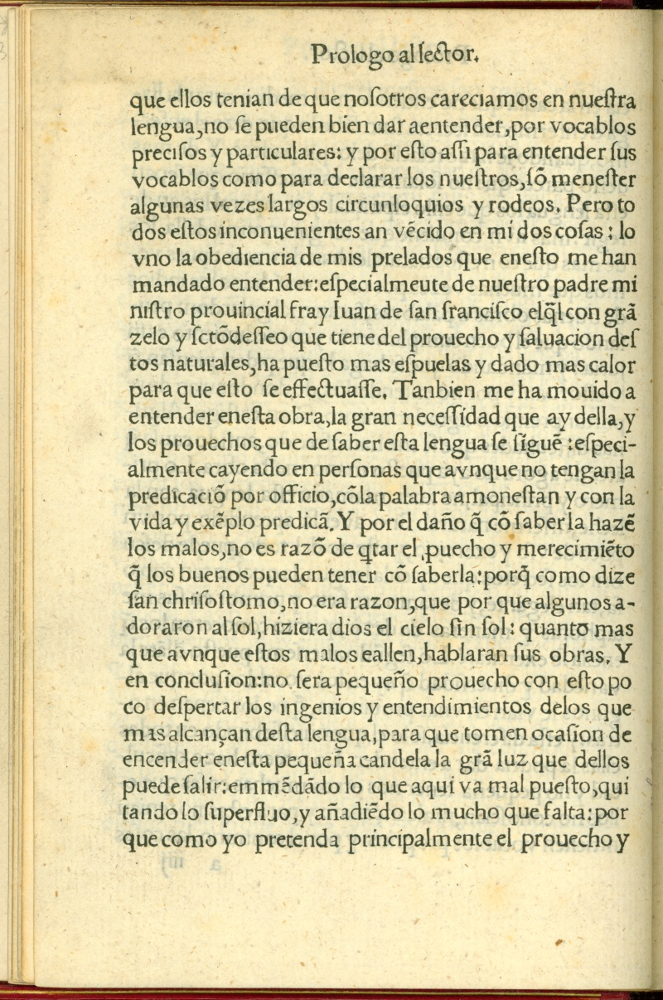
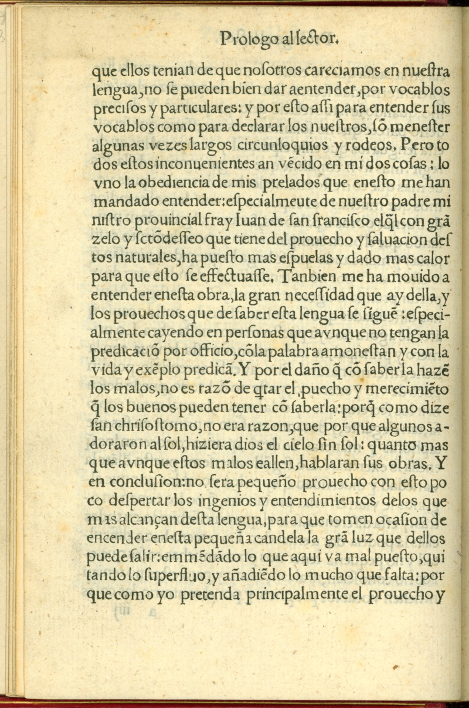

Christianizing the Nahua
 

Alonso de Molina
Vocabulario de la lengua castellana y mexicana, (recto and verso)
Central Mexico, ca. 1540
The friars used the study and alphabetization of Nahuatl to find ways to appropriately communicate the Christian message. Linguistic and cultural differences, major obstacles in the process of evangelization, allowed the Nahuas some flexibility to shape Christian beliefs and practices to suit their religious needs and cultural traditions.
In a passage from his Vocabulario, Father Alonso de Molina comments on some of the difficulties he encountered assembling the first printed Spanish-Nahuatl dictionary.
Newberry Library: Ayer 871 .A952 M7 1555